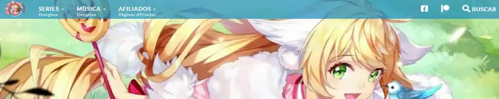

Animacion china..?
Qué es Manhua, Donghua o animacion china
Animación China o Donghua se refiere a la animación hecha en China xD. Manhua es el nombre con que se designa a la historieta o cómic en China y Taiwán. Las historietas realizadas en Hong Kong son llamadas mangahk.
Donghua vs Anime
En mi opinion las difencias son el idioma nativo de cada uno, pero lo miramos en sub xD ya ni cuentas jaja, otra diferencia es que el donghua hay mas drama mientras que los animes aveces le falta ese toque de drama, la animacion 2d japonesa es buena pero los chinos no se quedan atras, los donghuas 3D algunos son buenos y otros no tanto, otra diferencia que encuentro en los donghuas es que son de muchos capitulos mientras que los animes son de pocos capitulos, en fin ambas son buenas y disfrutables.
¿Quién soy?
Yo soy Loz, veo anime y donghua,anime favorito "sword art online", donghua favorito "doupo cangqiong" y
muchos mas.
Aqui les traigo un breve resumen de preguntas cuando empezamos a ver la animacion china:¿qué es manhua? ¿qué
es donghua? ¿dónde los veo? etc.
Recomendaciones
Combat Continet
Tang ha renace con recuerdos en su vida anterior ,conoce a una niña xiao wu. Su camino hacia el cultivo es muy interesante y lo tendra ventaja sobre todos por las cosas que aprendio en su vida anterior.
.webp)
Cupit chocolate
Jiang Hao Yi, un estudiante normal de secundaria, de repente se convierte en el Rey Harem de su escuela y se le confiesan un montón de hermosas chicas! ¡Lo peor es que Jiang Hao Yi no conoce a ninguna de las chicas!
Doupo Cangqiong
Una tierra donde los fuertes hacen las reglas y los débiles tienen que obedecer. Una tierra llena de atractivos tesoros y belleza, pero también llena de peligro imprevisto.Que hara Xiao Yan para superar todos los obstaculos.
Legend of immortal
Nace un niño incapaz de cultivar es alejado de todo, el niño decido a ser fuerte entrena duro hasta que los años pasan y el niño crece y se hace fuerte, para despues demostrarlo a su padre.
Donde lo puedo ver
Modagamers
Modagamers.com es una pagina puedes ver donghuas gratuitos pero tiene ciertos defectos pero es buena, sus anuncios son molestos pero lo compensa con la rapides que saca los capitulos.
MundoDonghua
Mundodonghua.com es una pagina puedes ver donghuas gratuitos pero tiene ciertos defectos porque demora en salir los capitulos por su sistema patreon, compensa eso con traducciones de calidad pero viendo otras paginas que sacan al instante los capitulos pierde el valor ser vip patreon, en mi humilde opinion.
SeriesDonghua
Seriesdonghua.com es una pagina puedes ver donghuas gratuitos, recien la descubri y me parece muy buena haci que la recomiendo.